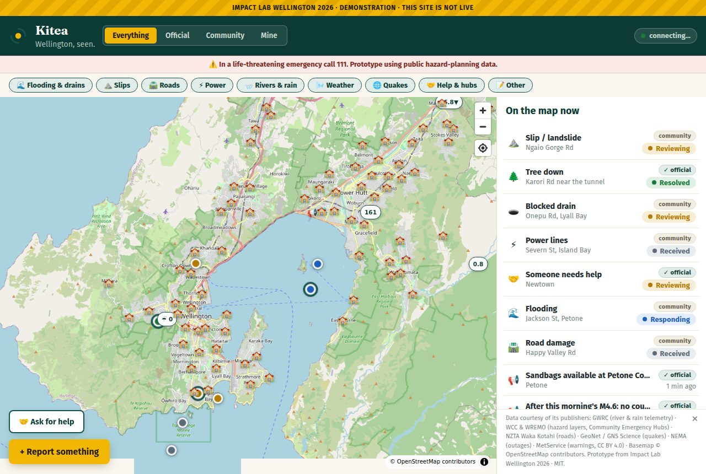
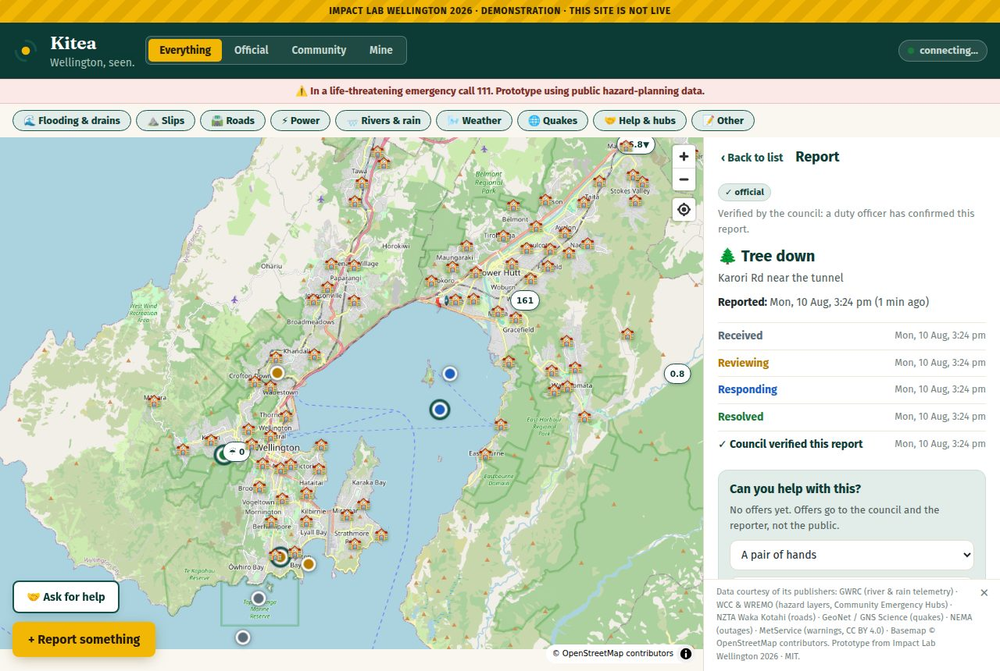
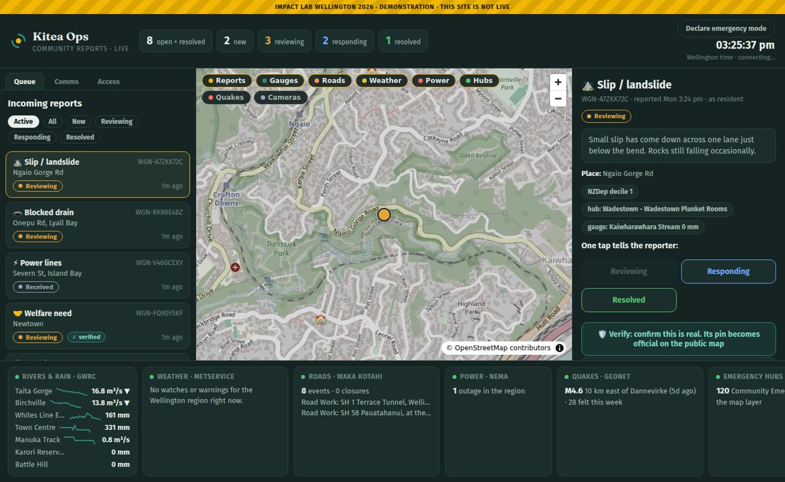
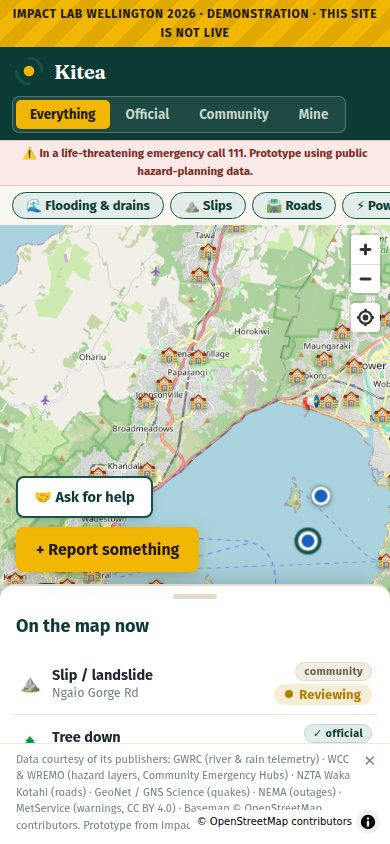

Community reports beside official agency data. Four lenses answer the question you're actually asking: Everything, Official, Community, or just Mine.

Received to resolved, updating live. When a duty officer verifies a report it becomes official on the public map — provenance you can see.

Every report triaged and grouped, hazard context per pin, one-tap verify and status. Acting on a report IS the acknowledgment the reporter sees.

No app, no login, no account. The map is the front door; a reference code is the only credential. Designed for a stressed phone in bad weather.
